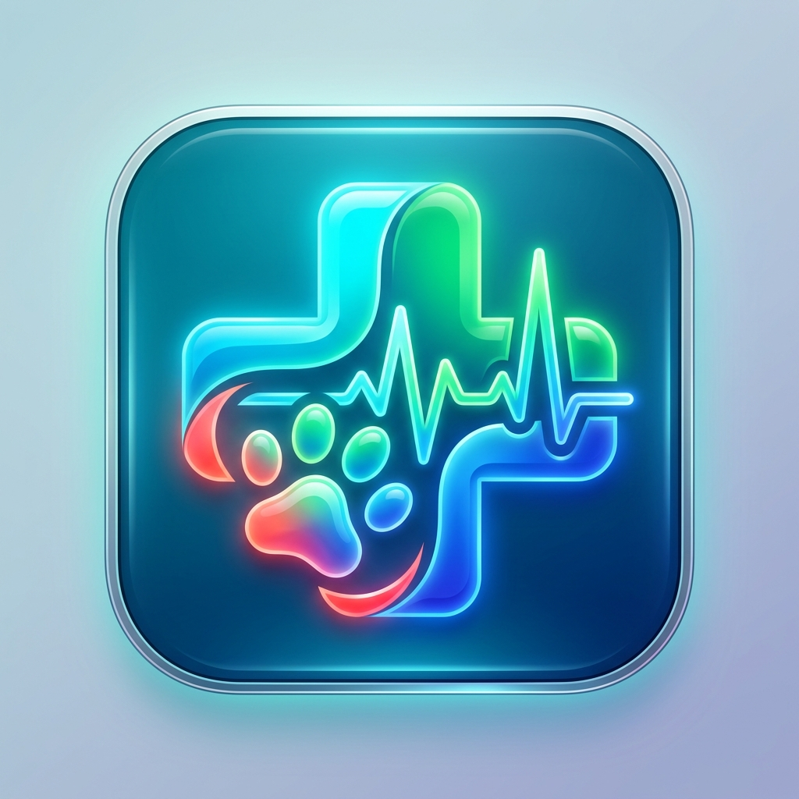

نظام نبض البيطري | VetPulse
الجيل الذكي لإدارة
العيادات والمراكز البيطرية • يعمل 100% بدون إنترنت
الصفحة 1 • الغلاف التقديمي
إعداد
وتقديم النظام
مهندس برمجيات / عبدالله عبدالمغني
الأديمي
استشاري ومطور الحلول البرمجية والأنظمة الطبية
التخصصية
المشروع الموجه لـ:
العيادات والمراكز البيطرية الرائدة
النسخة التجريبية الأولى Demo 1.0
⚡ أوفلاين 100%
يعمل محلياً عبر محرك SQLite
💰 الريال اليمني
حسابات دقيقة بـ (ر.ي / YER)
📄 روشتات PDF
طباعة ومشاركة واتساب فورية
🔔 تنبيهات ذكية
إشعارات المواعيد (12س/6س/1س)
نظام نبض البيطري (VetPulse) • عرض خاص للعميل المحتمل الأول
صفحة 1 من 6
لماذا يحتاج مركزكم البيطري إلى
نظام VetPulse؟
مقارنة التحديات اليومية للعيادات مع الحلول
الرقمية المتقدمة
الصفحة 2 • المشاكل والحلول
تواجه معظم العيادات والمراكز البيطرية عائقين رئيسيين: انقطاع خدمات الإنترنت أو بطئها مما يعطل
الأنظمة السحابية، وضياع السجلات الورقية للمرضى وتواريخ التطعيمات. نظام
VetPulse تم تصميمه هندسياً لحل هذه العقبات بالكامل وبأعلى كفاءة.
|
❌ انقطاع الإنترنت
|
توقف النظام تماماً عن حفظ الكشوفات أو مراجعة بيانات الحيوان عند غياب الشبكة.
|
✅ حل أوفلاين 100% بمحرك SQLite مشفر يعمل بدون إنترنت وبسرعة البرق
|
|
❌ فقدان التاريخ الطبي
|
عدم معرفة الأدوية التي تناولها الحيوان سابقاً، أو تكرار التحسس الدوائي لعدم التوثيق.
|
✅ ملف طبي شامل يبرز الحساسيات، منحنى الأوزان، وسجل العمليات
|
|
❌ نسيان المواعيد
|
تخلف المربين عن الحضور لجلسات التضميد، فك الخيوط الجراحية، أو الجرعات التنشيطية.
|
✅ مركز تنبيهات هاتفية ذكي (12س / 6س / 1س) وتذكيرات واتساب فورية
|
|
❌ تسعير الأدوية والريال
|
صعوبة ضبط تسعير الخدمات بالأدوية والمستلزمات واختلاف العملات.
|
✅ اعتماد الريال اليمني (ر.ي) مع خصم فوري من مخزون الصيدلية عند الكشف
|
نظام نبض البيطري (VetPulse) • إعداد: م. عبدالله عبدالمغني الأديمي
صفحة 2 من 6
الوحدات السريرية والطبية
التخصصية
نظام SOAP العالمي، الملف الطبي، وتوليد
الروشتات الرقمية
الصفحة 3 • الميزات السريرية
🩺 كشف سريري كامل بنظام SOAP
توثيق الشكوى (Subjective)، الفحص والحرارة والنبض
(Objective)، التشخيص (Assessment)، وجدول العلاج (Plan).
📁 الملف الطبي التكاملي للحيوان
شريط الحساسيات الدوائية التحذيري (Allergy Banner)،
منحنى الوزن البيولوجي، وسجل العمليات والمراجعات السابقة.
🖨️ طباعة وتصدير روشتات PDF عربية
روشتات رسمية بترويسة وشعار العيادة، تفصيل الجرعات
والتكرار والمدة مع زر إرسال مباشر عبر واتساب للمربي.
💊 الربط الصيدلاني والتسعير التلقائي
خصم فوري لكميات الأدوية من مخزون العيادة بمجرد اعتماد
الكشف، وحساب إجمالي الفاتورة بدقة بـ الريال اليمني.
نظام نبض البيطري (VetPulse) • إعداد: م. عبدالله عبدالمغني الأديمي
صفحة 3 من 6
جناح العمليات الجراحية والتخريج
الطبي
إدارة التخدير، قائمة التحقق، وتوثيق إرشادات
المالك لما بعد العملية
الصفحة 4 • العمليات الجراحية
1. قبل الجراحة (Pre-Op)
صيام 8 ساعات، تحاليل وظائف الأعضاء، وموافقة المالك.
2. أثناء الجراحة
(Surgical)
بروتوكول التخدير (Sevoflurane)، الجراح، ومجريات
العملية.
3. التخريج (Discharge)
تقييم الإفاقة، إرشادات المربي بالمنزل، وحجز المتابعة.
🌟 شاشة إتمام وتخريج الجراحة المعتمدة
(CompleteSurgeryView):
✔️ نتائج الجراحة والتعافي: توثيق نجاح العملية، استئصال الحصوات، وخياطة الجرح والإفاقة.
✔️ ملاحظات العناية للمالك: إرشادات ارتداء الطوق، تطهير الجرح، ومنع القفز والحركة.
✔️ حجز موعد المراجعة آلياً: جدولة موعد فك الغرز أو الكشف الدوري وإرساله للتنبيهات.
✔️ تثبيت التكلفة بالريال اليمني: اعتماد التكلفة النهائية وإصدار فاتورة إلكترونية
معتمدة.
نظام نبض البيطري (VetPulse) • إعداد: م. عبدالله عبدالمغني الأديمي
صفحة 4 من 6
إدارة الصيدلية، المخزون المزدوج،
والتنبيهات
التحكم المالي، مراقبة الصلاحيات، والتنبيهات
المسبقة للمواعيد
الصفحة 5 • الصيدلية والتنبيهات
📦 المخزون المزدوج (صيدلية العيادة +
المستودع)
فصل احترافي بين الأدوية المتاحة على رفوف
الكشف الفوري والمخزون الاحتياطي في المستودع:
- تحويل بضائع داخلي من المستودع إلى الصيدلية بنقرة واحدة.
- تنبيهات تلقائية عند انخفاض المخزون عن الحد الأدنى الآمن.
- رصد تاريخ الصلاحية وحساب فترات الركود والانتهاء المسبق.
🔔 مركز التنبيهات متعدد المراحل الزمني
نظام ذكي يفرز المواعيد والعمليات القادمة حسب
درجة الإلحاح:
- أقل من ساعة (حرج ⚠️): تجهيز غرفة العمليات فوراً أو التواصل
بالهاتف.
- خلال 6 ساعات: التذكير المسبق وتأكيد حضور المربي.
- خلال 12 ساعة: المراجعات المجدولة للوردية القادمة.
- إرسال تذكيرات هاتفية ورسائل واتساب مسبقة بضغطة زر.
نظام نبض البيطري (VetPulse) • إعداد: م. عبدالله عبدالمغني الأديمي
صفحة 5 من 6
دليل تجربة نسخة العرض (Demo)
وخطة التدشين
بيانات واقعية جاهزة للتجربة المباشرة
وإمكانية إعادة التعيين بضغطة زر
الصفحة 6 • تجربة العرض والتدشين
🐾 الحالات الطبية النموذجية المجهزة للتجربة:
🐈 سيمبا (قط شيرازي)
المالك: م. أحمد الشامي • مصاب بالتهاب معوي حاد، جراحة حصوات،
حساسية بنسلين وموعد مراجعة حرج اليوم.
🐕 روكي (كلب جيرمن شيبرد)
المالكة: د. ريم باعباد • تطعيم خماسي دوري + مضاد ديدان،
وتتبع للأوزان (28.5 كجم) مع موعد مراجعة خلال 6 ساعات.
🐈 ميشو (قط بريطاني)
المالك: أ. طارق الحميري • مجدول لتنظيف الأسنان وإزالة
التكلس، مع تنبيه مسبق خلال 12 ساعة.
🐈 لوزة (قطة سيامية)
المالكة: فاطمة اليماني • عملية تعقيم وقائي مجدولة غداً مع
بروتوكول تخدير استنشاقي Sevoflurane.
🔄
ميزة إعادة ضبط بيانات العرض (Demo Reset): يمكنكم تجربة إضافة أو حذف أي سجل، ثم الضغط
على زر "تهيئة البيانات" في أعلى الشاشة لإعادة كافة البيانات النموذجية فوراً!
جاهزون لتدشين النظام في عيادتكم الموقرة
يشمل العرض التثبيت على أجهزتكم، تدريب الطاقم
الطبي والاستقبال، وتخصيص ترويسة الروشتة بشعاركم الرسمي.
كما نرفق لكم [نموذج طلب التعديلات
والملاحظات] لتدوين أي رغبات إضافية لعيادتكم.
للتواصل المباشر والطلب:
م. عبدالله عبدالمغني
الأديمي
مهندس برمجيات ومطور أنظمة
هاتف / واتساب • الجمهورية اليمنية
نظام نبض البيطري (VetPulse) • إعداد: م. عبدالله عبدالمغني الأديمي
صفحة 6 من 6 • نهاية العرض التقديمي